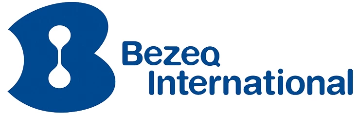

An agent that works on your network, alongside your team.
Connectix is an AI agent for VoIP providers, ITSPs and carriers. It runs next to your switch, reads its events and the audio of a call, and answers on a SIP line of its own. When a person should take over, it hands the call to them with a written summary. It changes nothing on the switch without an approval.
The desktop app, Windows x64, from GitHub Releases.



Three jobs it is built for
One job first, on one network, measured against the numbers you already keep. These are the three Connectix is built to take.
Tier-1 support
A subscriber calls the support line. The bot answers, looks up the subscriber's registration and recent calls on the switch, and fixes what it safely can. Anything else goes to a person, with a summary of what was said and what was found.
NOC watch
The bot reads the switch's events: registrations, failed calls, answer-seizure ratio, trunk errors. It explains a fault in plain words and raises an alert. An action on the switch is fenced and waits for a person's approval.
Provisioning
Numbers, extensions and devices through your own provisioning API, asked for in chat or on a call. Each request and its result are written down, so the change can be read back later.
How it works
Connectix sits next to FreeSWITCH. The switch keeps doing the telephony; Connectix listens, speaks, looks things up and asks before it acts.
It reads the switch
FreeSWITCH's Event Socket, read directly or through a small agent installed beside the switch. Every event passes through one pipeline with bounded buffers and is kept in a store with retention.
It hears the call
mod_earshot streams an answered call's audio to Connectix over a WebSocket. Speech becomes text, the bot answers, the answer is spoken back. The caller can interrupt.
It has its own line
Connectix registers a SIP account like any extension and places or takes calls on it, so the bot has a number of its own on your switch.
It hands off with a summary
When a person should take the call, they get it together with a written summary of the conversation and of what was looked up.
It acts behind approvals
Transfer, hang up, dial, a change on the switch: each action is whitelisted on the switch and waits for an approval on Connectix's side. Both fences hold.
It runs where you run
The same program, in two places. Call records, events and recordings stay on your hardware. The speech and language models are the providers you configure.
One container next to FreeSWITCH
The bot, the event pipeline, the voice path, the chat and the reports in one container on your network. It connects to the switch over the Event Socket and mod_earshot; a second switch gets a small agent that forwards its events.
Configuration is environment variables. Secrets are named in files and read from the environment; they are never written to disk by Connectix.
A Windows desktop app
A window with a softphone that registers to your PBX over SIP and carries the call's audio both ways, plus the chat with the bot and the reports. One install is one agent.
The installer is on GitHub Releases, with a checksum file for each version.
Built on Elixir and OTP
Connectix is one Elixir application. The parts that matter on a telecom network are the ones that keep running.
Supervised
Every long-lived part, from the switch connection to the call's audio, is a supervised process. A failure restarts that part, not the program.
Bounded
Every buffer has a size. When a switch sends more than Connectix can take, the oldest events are dropped, counted and logged once, and the rest keeps flowing.
Watched
A connection that can die silently is monitored on both ends, with keepalives and a deadman timer. It reconnects with backoff, from one second up to thirty.
Looking for a first pilot
Connectix is early. We want to run it on one telecom company's network, on one of the three jobs, and measure the result against your own numbers. If that could be you, write to us.